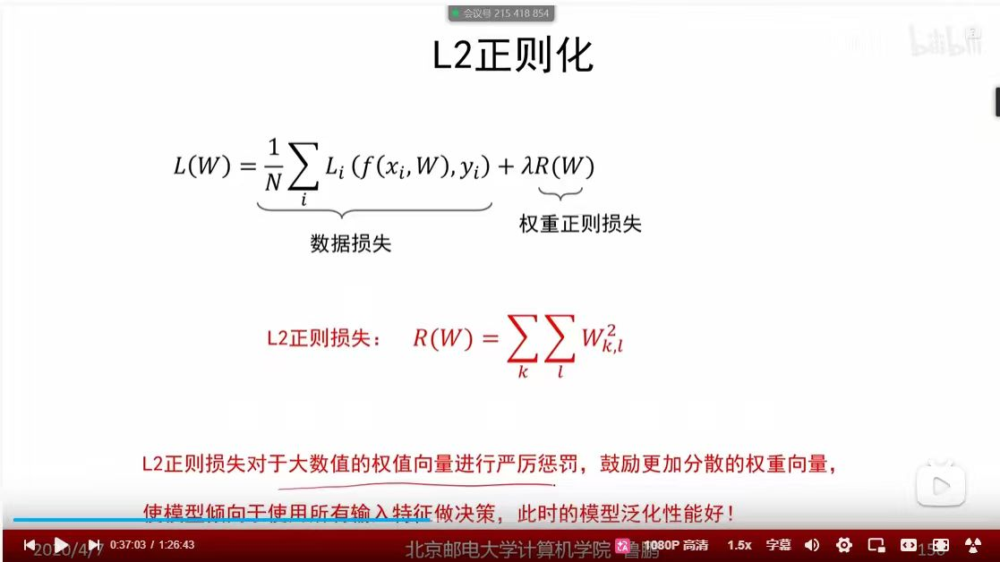
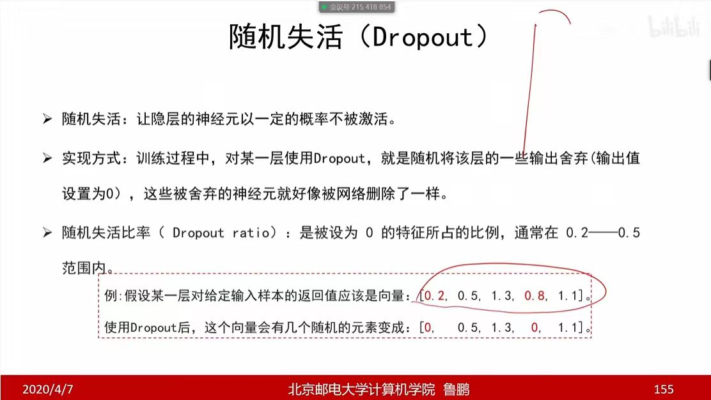
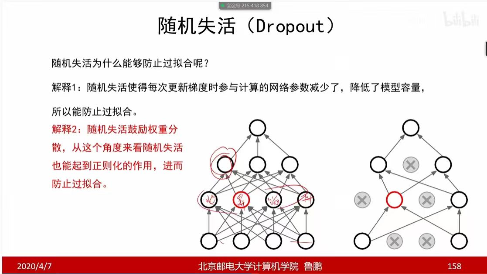

如何寻找最优超参数配置？
核心思考： 搜索策略的选择直接影响训练效率。通常随机搜索在面对高维参数空间时，往往能比网格搜索更高效地找到较优的超参数组合。
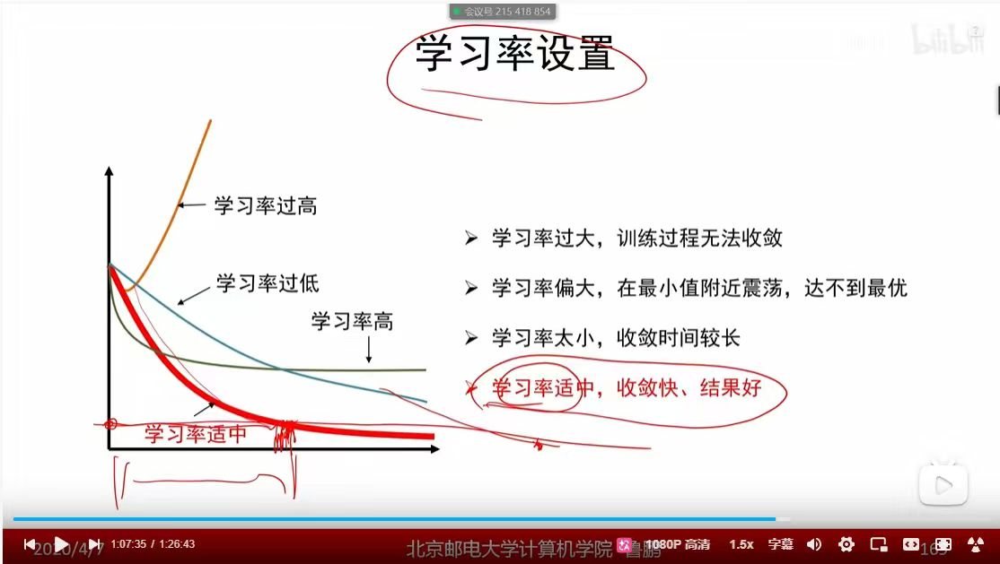
定义： 学习率是优化过程中最重要的超参数，直接决定了参数更新的步长。
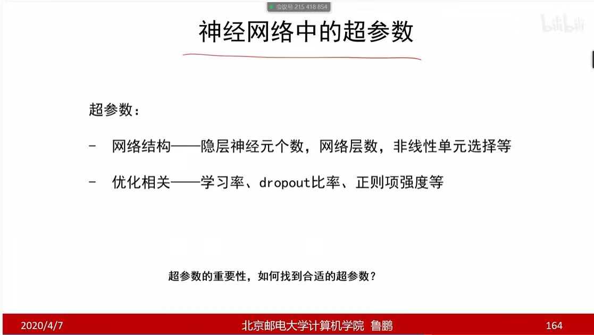
定义： 超参数是模型训练前需要人工设定的配置，直接决定了模型的容量与训练过程。
核心思考： 既然这些参数无法通过反向传播自动学习，如何高效地搜索并确定一组最优的超参数配置，是模型开发中的重要课题。
峡谷效应导致震荡慢。
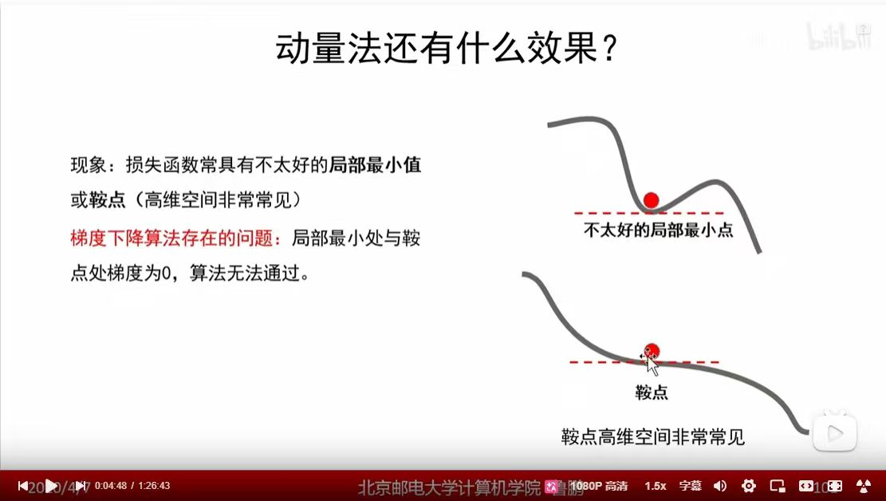
利用惯性跨越鞍点。
震荡区减小步长，平坦区增大。
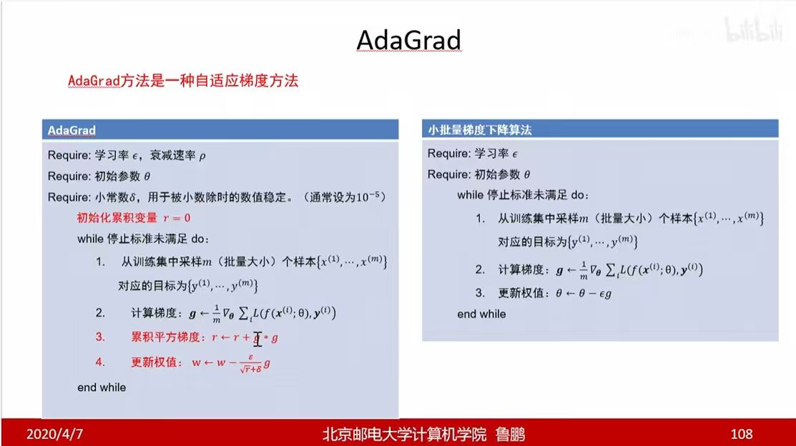
学习率随累积梯度增大而减小。
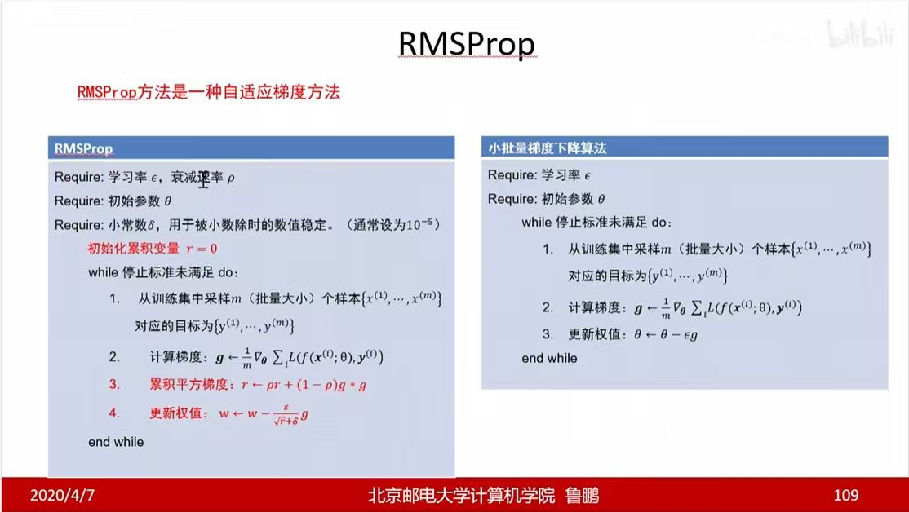
引入衰减防止学习率消失。
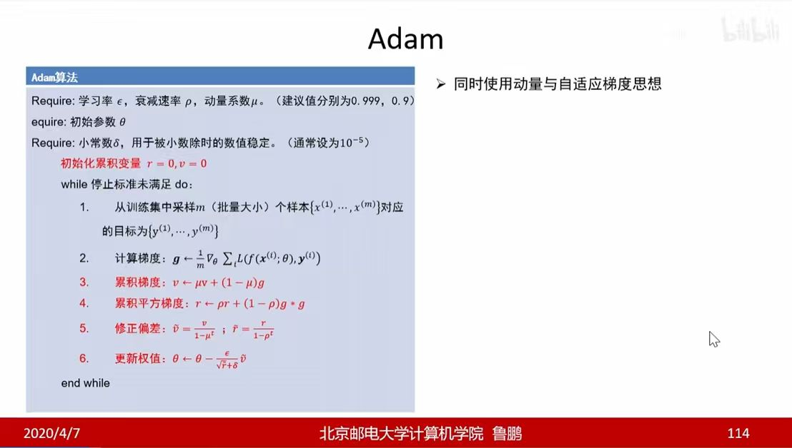
动量+RMSProp，主流优化算法。
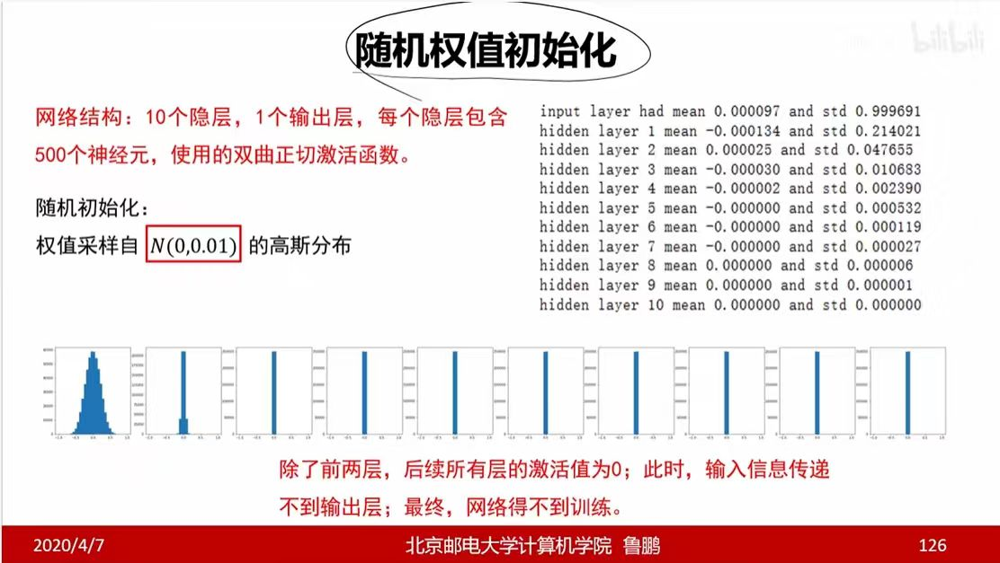
方差过小导致信号消失。
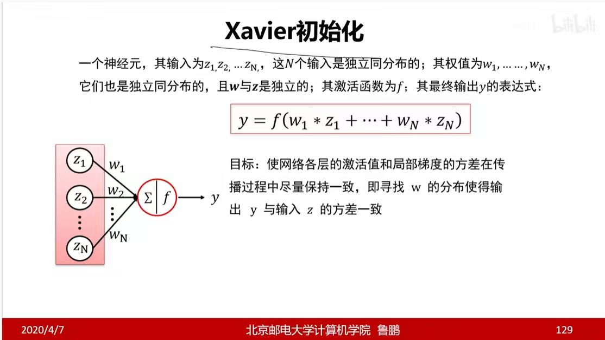
保持方差一致。
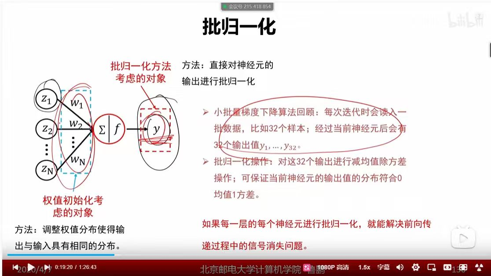
源头控制 vs 过程动态修正。
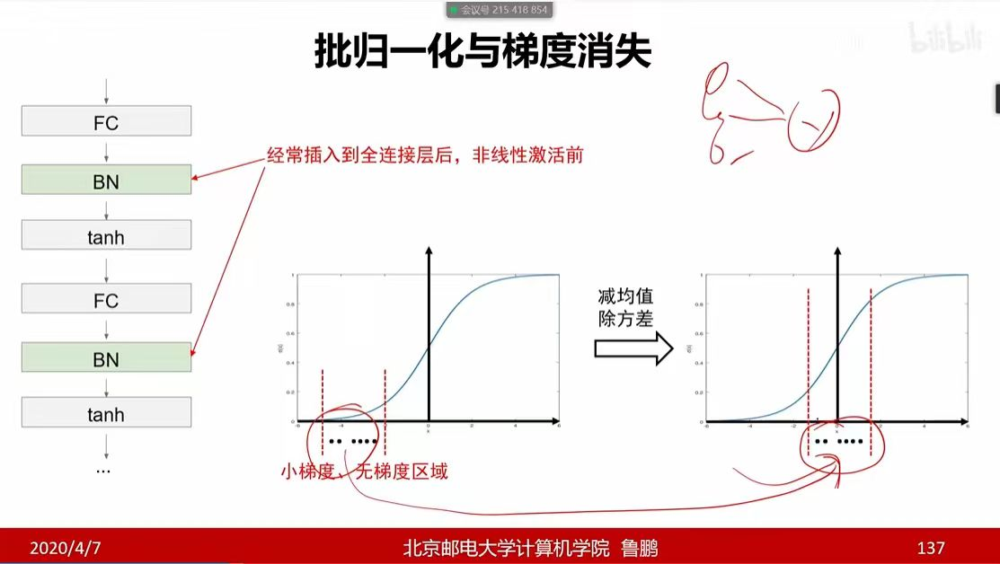
拉回线性敏感区。
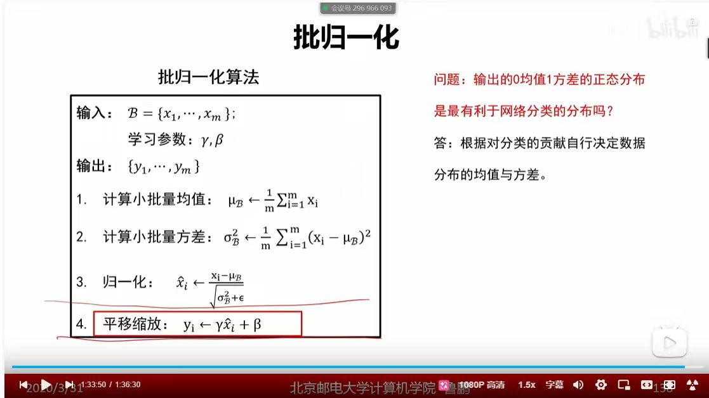
归一化 + 可学习参数。
背诵训练数据，泛化差。
复杂 vs 简单。
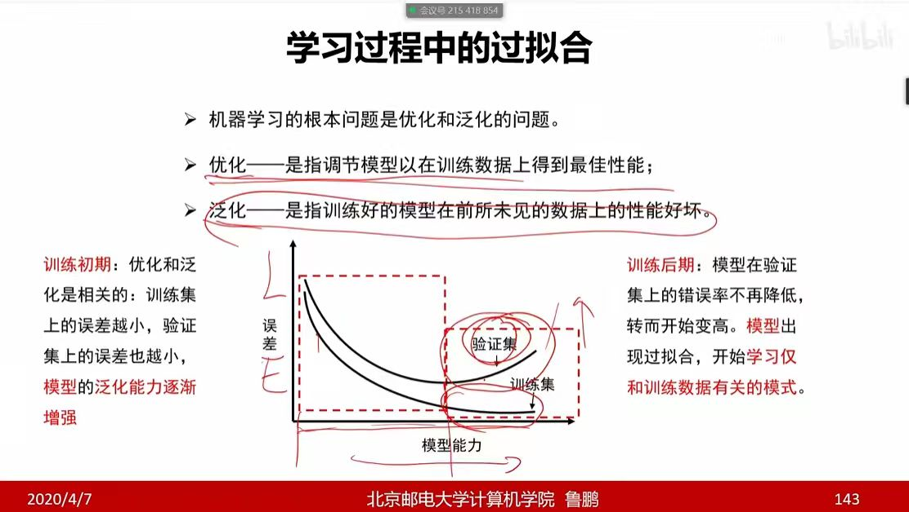
训练最优 vs 未知最优。

惩罚大权重，防过拟合。


Dropout 为什么能防止过拟合？